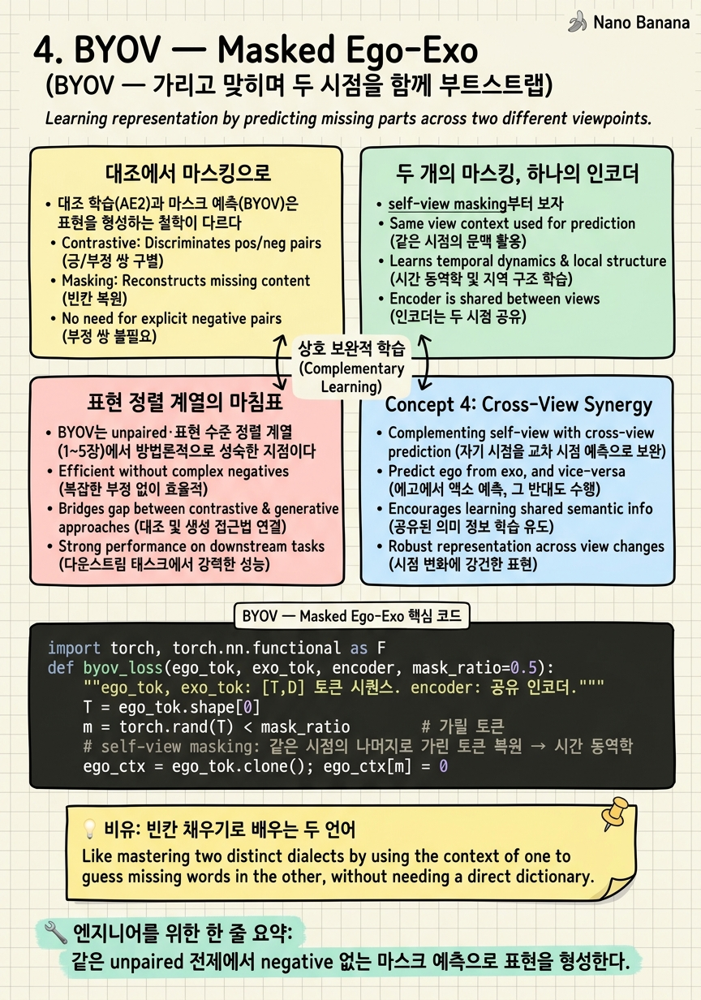

BYOV — Masked Ego-Exo
문장의 빈칸을 채우다 보면 언어를 배운다. 그렇다면 영상의 '시점'을 빈칸으로 두고 채우게 하면, 기계는 두 시점의 관계를 배울까?

🎯 학습 목표
- 대조 학습과 마스크 예측의 차이를 표현학습 관점에서 안다
- self-view masking이 시간 동역학을 포착하는 원리를 이해한다
- cross-view masking이 시점 정렬을 만드는 방식을 안다
- 두 마스킹을 동시에 학습하는 이점을 설명한다
- 표현 수준 정렬 계열(1~5장)의 공통 한계를 정리한다
3장 AE2가 unpaired 정렬을 대조(contrastive)로 풀었다면, BYOV(CVPR 2025)는 같은 unpaired 전제에서 도구를 바꾼다 — 마스크 예측(masked modeling)이다.
마스크 예측은 최근 표현학습의 주력이다. BERT가 문장의 단어를 가리고 맞히며 언어를 배우고, MAE가 이미지 패치를 가리고 복원하며 시각을 배웠다. BYOV는 이 발상을 ego-exo에 이식한다 — 무엇을 가릴 것인가가 핵심 설계다.
BYOV의 답은 두 종류의 가리기다. self-view masking은 한 시점 안에서 일부 토큰을 가리고 그 시점의 나머지로 복원하게 해 시간 동역학을 배우게 한다. cross-view masking은 한 시점의 잠재를 가리고 다른 시점으로부터 예측하게 해 시점 간 정렬을 배우게 한다. 이 둘을 동시에 학습하면, 표현이 '자기 시점의 시간 구조'와 '상대 시점과의 대응'을 함께 담는다. 이름 그대로 두 시점이 서로를 부트스트랩한다.
핵심 내용
대조에서 마스킹으로
대조 학습(AE2)과 마스크 예측(BYOV)은 표현을 형성하는 철학이 다르다.
| 축 | 대조 학습 | 마스크 예측 |
|---|---|---|
| 신호 | positive/negative 쌍의 거리 | 가린 부분의 복원·예측 |
| negative | 필요(하드 negative 설계 중요) | 불필요 |
| 학습 대상 | 무엇이 같고 다른가 | 무엇이 빠졌는가를 채우는 구조 |
대조는 강력하지만 negative 설계에 민감하다(AE2의 역순 트릭이 그 예다). 마스크 예측은 negative 없이, "빠진 것을 문맥으로 채워라"는 자기예측만으로 풍부한 구조를 학습한다. 특히 시간·시점 같은 구조적 관계를 배우는 데 유리하다.
BYOV의 베팅은 "ego-exo 정렬도 채우기 문제로 볼 수 있다"는 것이다. 시점을 빈칸으로 두고 채우게 하면, 그 채우기를 잘 하기 위해 네트워크는 두 시점의 관계를 내부에 표현해야 한다.

두 개의 마스킹, 하나의 인코더
self-view masking부터 보자. ego(또는 exo) 시퀀스의 일부 토큰을 가리고, 같은 시점의 나머지 토큰으로 가린 토큰의 임베딩을 복원한다. 이렇게 하면 인코더는 "이 시점 안에서 시간이 어떻게 흐르는가" — 인과적 시간 동역학 — 를 배운다. 한 시점의 자기 완결적 구조다.
cross-view masking이 정렬의 핵심이다. 한 시점의 잠재를 가리고, 다른 시점의 정보로부터 그것을 예측한다. exo를 보고 가려진 ego 잠재를 맞히려면, 네트워크는 "exo의 이 상태는 ego의 어떤 상태에 대응하는가"를 알아야 한다. 이 예측이 성공하려면 두 시점이 공유 표현으로 정렬되어야 하므로, cross-view masking 자체가 정렬을 강제한다.
두 마스킹은 하나의 공유 인코더에서 동시에 학습된다. self-view가 각 시점의 시간 구조를 다지고, cross-view가 시점 간 다리를 놓는다. 이름 'Bootstrap Your Own Views'가 가리키듯, 두 시점이 서로의 학습 신호가 되어 함께 표현을 끌어올린다.
표현 정렬 계열의 마침표
BYOV는 unpaired·표현 수준 정렬 계열(1~5장)에서 방법론적으로 성숙한 지점이다. negative 설계 부담 없이, 마스크 예측만으로 시간 동역학과 시점 정렬을 함께 얻는다. AE2가 연 unpaired 문을, 더 안정적이고 확장 가능한 도구로 통과한 셈이다.
그러나 여기서 이 계열의 공통 천장이 드러난다. 1~5장은 모두 정렬을 표현(feature) 공간에서 이룬다 — 두 시점의 임베딩을 가깝게, 시간을 맞게, 잠재를 예측 가능하게. 이것은 "같은 행동인가", "어느 순간에 대응하는가"에는 답하지만, "이 exo 프레임의 저 컵이 이 ego 프레임의 어느 컵·어느 픽셀인가"라는 공간적·객체적 대응에는 답하지 못한다.
로보틱스·AR은 바로 이 공간 대응을 요구한다. 로봇이 3인칭 시연 영상을 보고 1인칭으로 따라 하려면, 시연 속 객체가 자기 시야의 어느 객체인지 픽셀 수준으로 알아야 한다. 표현 정렬만으로는 부족하다. 다음 장(5장 Rosetta Stone)이 표현 계열의 마지막 확장을 보인 뒤, 6장부터 무대는 객체 수준 대응(correspondence)으로 완전히 이동한다.
💡 비유로 이해하기
언어를 배우는 두 방법이 있다. 하나는 "이 문장과 저 문장이 같은 뜻인가"를 계속 비교하는 것(대조). 다른 하나는 문장에 빈칸을 뚫고 채우게 하는 것(마스킹). 후자가 BERT의 방식이고, 놀랍게도 비교 없이 더 깊은 문법을 가르친다.
BYOV의 self-view masking은 한 언어 안에서 빈칸 채우기다 — 한국어 문장의 단어를 가리고 한국어 문맥으로 채우며 한국어 문법(시간 동역학)을 익힌다. cross-view masking은 번역 빈칸 채우기다 — 한국어 문장을 보고 대응하는 영어 문장의 가린 부분을 채운다. 이걸 잘하려면 두 언어의 대응 관계를 내부에 표현해야 하니, 채우기 자체가 정렬을 만든다.
두 빈칸 채우기를 한 학생이 동시에 하면, 각 언어의 문법과 두 언어의 다리를 함께 배운다. 단, 이 학생은 '문장 대 문장'의 대응까지다 — "이 단어가 저 단어에 정확히 대응한다"는 단어 정렬은 다음 학기(correspondence) 과정이다.
💻 코드 예시
BYOV의 두 마스킹을 한 인코더에서 동시에 학습하는 골격을 보자.
import torch, torch.nn.functional as F
def byov_loss(ego_tok, exo_tok, encoder, mask_ratio=0.5):
"""ego_tok, exo_tok: [T,D] 토큰 시퀀스. encoder: 공유 인코더."""
T = ego_tok.shape[0]
m = torch.rand(T) < mask_ratio # 가릴 토큰
# self-view masking: 같은 시점의 나머지로 가린 토큰 복원 → 시간 동역학
ego_ctx = ego_tok.clone(); ego_ctx[m] = 0
ego_pred = encoder(ego_ctx)
L_self = F.mse_loss(ego_pred[m], ego_tok[m])
# cross-view masking: 상대 시점으로부터 가린 잠재 예측 → 시점 정렬
exo_lat = encoder(exo_tok) # exo 잠재
ego_from_exo = encoder(exo_lat, cross=True) # exo→ego 예측
L_cross = F.mse_loss(ego_from_exo[m], ego_tok[m])
return L_self + L_cross # 두 목적 동시 학습
# self가 각 시점의 시간 구조를, cross가 시점 간 다리를 만든다두 손실이 핵심이다. L_self는 ego를 가리고 ego 문맥으로 복원 — 자기 시점의 시간 동역학을 배운다. L_cross는 가린 ego 잠재를 exo로부터 예측 — 이게 성공하려면 두 시점이 공유 표현으로 정렬되어야 하므로 정렬이 강제된다. encoder가 공유되어 두 신호가 같은 표현 공간을 함께 형성한다. AE2와 달리 negative 샘플이 전혀 없다 — 채우기만으로 시간 구조와 시점 정렬을 함께 얻는 게 마스킹의 매력이다.
🏭 현업에서의 평가
✅ 시니어가 보는 것
- 대조와 마스킹의 트레이드오프(negative 부담 등)를 설명하는가
- self/cross masking이 각각 무엇을 학습시키는지 구분하는가
- 표현 수준 정렬의 공통 한계(공간 대응 부재)를 인지하는가
⚠️ 레드 플래그
- 마스킹을 그냥 MAE 복붙으로 보고 self/cross 구분을 못 함
- cross-view masking이 왜 정렬을 만드는지 설명 못 함
- 표현 정렬로 로보틱스 공간 대응까지 된다고 과신
🎤 예상 인터뷰 질문 (클릭하면 모범답안)
AE2의 대조 대신 BYOV가 마스킹을 택한 이점은?
마스킹은 negative 샘플이 불필요하다. AE2는 역순 같은 하드 negative 설계에 성능이 민감했지만, 마스킹은 '가린 것을 문맥으로 채워라'는 자기예측만으로 시간·시점 구조를 배운다. 특히 구조적 관계 학습에 안정적이고 확장 가능하다.
self-view와 cross-view masking은 각각 무엇을 학습시키는가?
self-view는 한 시점 내에서 가린 토큰을 같은 시점 문맥으로 복원 → 시간 동역학(인과적 흐름)을 학습. cross-view는 가린 한 시점의 잠재를 다른 시점으로부터 예측 → 이게 되려면 두 시점이 정렬돼야 하므로 시점 정렬을 강제. 둘을 공유 인코더에서 동시에 배워 각 시점 구조와 시점 간 다리를 함께 얻는다.
1~5장 표현 정렬 계열이 공통으로 못 하는 것은?
공간·객체 수준 대응이다. 임베딩을 가깝게·시간을 맞게·잠재를 예측 가능하게 만들어 '같은 행동인가/어느 순간인가'에는 답하지만, 'exo의 이 컵이 ego의 어느 픽셀·객체인가'에는 답 못 한다. 로보틱스·AR이 요구하는 이 대응은 6장 correspondence 계열의 과제다.
✨ 핵심 요약
대조→마스킹
같은 unpaired 전제에서 negative 없는 마스크 예측으로 표현을 형성한다.
self-view masking
한 시점 안에서 가린 토큰을 복원해 인과적 시간 동역학을 배운다.
cross-view masking
가린 한 시점 잠재를 다른 시점으로 예측 — 성공하려면 정렬이 필요하므로 정렬이 강제된다.
공유 인코더 동시 학습
두 마스킹이 같은 표현 공간을 함께 형성해 시점이 서로를 부트스트랩한다.
negative 부담 제거
AE2의 하드 negative 설계 민감성을 채우기 자기예측으로 우회한다.
표현 정렬의 성숙
unpaired·표현 수준 정렬 계열의 방법론적으로 성숙한 지점.
공통 천장
1~5장 모두 feature 정렬 — 공간·객체 대응은 못 한다. correspondence로의 이동이 필연.
- Park et al. (2025). Bootstrap Your Own Views: Masked Ego-Exo Modeling for Fine-grained View-invariant Video Representations (BYOV). CVPR 2025. arXiv:2503.19706